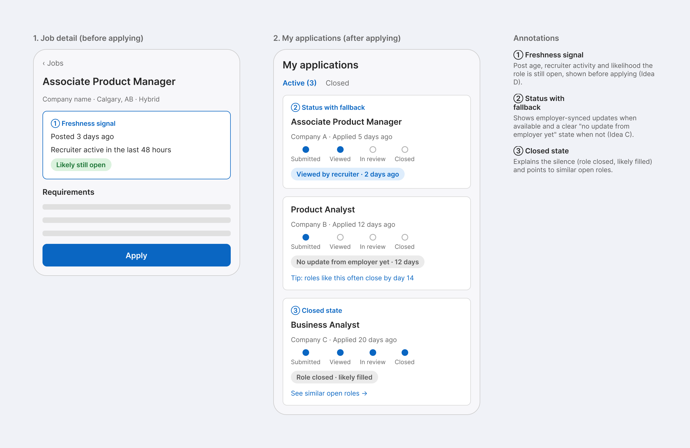

How to read this
Statements marked Fact come from official or primary sources. PM analysis is my interpretation. Hypothesis is something I would validate before building.
1. What problem are we solving?
LinkedIn describes itself as the world's largest professional network, and jobs are a core part of the product. Fact LinkedIn Newsroom
I focus on one slice: the stretch between finding a role and learning what happened to an application. The segment is early-career candidates and career switchers. They share one trait: no strong track record in the field they are targeting, so titles, years of experience and a network do not work in their favor. PM analysis
2. What does LinkedIn offer today?
LinkedIn supports three applicant updates: Application Viewed, Resume Downloaded and Application Rejected. Applicants can see them in email, on the job posting and in My Jobs. These events are sent from the employer's applicant tracking system, so coverage depends on the employer. Fact Microsoft Learn
Indeed shows a similar limit: employer-updated statuses are generally only available for jobs posted directly on Indeed. Fact Indeed Help
So the opportunity is not "add status." It is closing the gaps where status is missing or unexplained. PM analysis
| Situation | Likely experience today | Gap to test |
|---|---|---|
| Employer syncs status | Applied, Viewed, Rejected | Coverage varies by employer |
| Employer does not sync | Often just "Applied" | Silence with no explanation |
| Role filled or closed | Unclear | No "likely filled" signal |
| Applied on an external site | Showed only "Applied" in 14 of 14 of my logged applications | Candidate loses the thread |
Hypothesis The silence and closed-role rows are still hypotheses. My log is too early to test them (see below).
My own observation
I logged what my Applied tab showed for 20 applications submitted between September 26 and October 3, 2026. First-hand
| How I applied | Applications | Showing only "Applied" | Showing "Viewed" |
|---|---|---|---|
| Easy Apply | 6 | 4 | 2 |
| External site | 14 | 14 | 0 |
| Total | 20 | 18 | 2 |
None of the 20 had received a response when I checked. The only updates beyond "Applied" appeared on Easy Apply applications, and none appeared on applications made on an external site. This is consistent with the idea that status is missing when the application happens off LinkedIn. PM analysis
Limits. This is one person, one week, mostly product roles, so I report counts and not rates. Every application was 0 to 7 days old, so the log cannot yet test the silence or closed-role hypotheses. I plan to re-check at around 14 days and add screenshots.
3. The job seeker journey
| Stage | What they do | Likely pain points |
|---|---|---|
| Discover | Search, browse, set alerts | Titles do not map to their experience; stale postings |
| Evaluate fit | Read requirements, check the company | Inflated requirements; no sense of match strength or whether the role is still open |
| Prepare | Tailor resume and profile | Profile built around past titles; hard to show transferable skills |
| Apply | Easy Apply or external form | Volume over fit |
| Wait | Check for updates, follow up | Silence with no status or reason |
| Learn and adjust | Rework resume and search | No feedback loop |
I focus on evaluating fit and waiting: they are where uncertainty is highest and where LinkedIn holds data that could help. PM analysis
4. Hypotheses to validate
- Candidates skip roles they could do well, or apply to roles with no realistic chance, because they cannot judge fit.
- Silence after applying is more discouraging than rejection.
- Early-career users lack a network; switchers have one, but in a different field. They may need different solutions.
- A clear "no update yet" or "role closed" state would reduce wasted follow-up and drop-off.
Hypothesis None of these is confirmed. The validation plan is in section 9.
5. Success metrics
| Type | Metric | Why |
|---|---|---|
| Primary (fit) | Response rate on applications from the segment | Better-matched applications |
| Primary (waiting) | Share of applications with a known status within 14 days | Directly measures the silence problem |
| Supporting | Share of applications showing any employer-synced status | Measures coverage |
| Supporting | Median time to first signal; 30-day search retention | Faster feedback, less drop-off |
| Guardrail | Recruiter satisfaction, posting volume, notification opt-outs | Do not harm the employer side |
| Guardrail | Apply rate for early-career users and switchers | A freshness cue must not discourage good applications |
PM analysis These are metrics I would propose, not ones LinkedIn publishes. I would set directional targets only after a baseline exists.
6. Solution options
| Option | Stage | Reach | Impact | Conf. | Effort | RICE |
|---|---|---|---|---|---|---|
| D. Stale and likely-filled posting signal | Wait | 9 | 2 | 0.8 | 3 | 4.8 |
| C. Status with fallback states | Wait | 9 | 3 | 0.6 | 6 | 2.7 |
| A. Requirements breakdown (must-have vs nice-to-have) | Fit | 8 | 2 | 0.7 | 5 | 2.2 |
| F. Combined application hub | Both | 9 | 3 | 0.4 | 9 | 1.2 |
| B. Transferable-skills mapper | Fit | 5 | 2 | 0.5 | 6 | 0.8 |
| E. Post-application feedback | Wait | 6 | 2 | 0.4 | 7 | 0.7 |
Hypothesis Scores are illustrative estimates (Reach 1-10, Impact 0.5-3, Confidence 0.1-1, Effort 1-10), to be revised with research.
7. Wireframe
A low-fidelity sketch of the proposed bet, designed in Figma. Copy and numbers are placeholders.

Company name, Calgary, hybrid
Posted 3 days ago
Recruiter active in the last 48 hours
Likely still open
Product Analyst, applied 12 days ago
Business Analyst, applied 20 days ago
See similar open roles
PM analysis "Likely filled" would be an inferred hint, not a fact. A recruiter-confirmed status is the stronger version.
8. Risks and tradeoffs
| Risk | Mitigation |
|---|---|
| Recruiter pushback on transparency, or extra workload | Keep the fallback inferred and lightweight; no new recruiter tasks |
| Wrong "likely filled" labels erode trust | Show it as a hint, and track how often it is wrong |
| Cues discourage early-career users from applying | Show context, never a score; watch this segment's apply rate |
| Notification fatigue | Opt-in alerts, batched |
| Coverage limited by employer systems | Track coverage as its own metric; make the fallback useful on its own |
I would stop or change course if research shows fit anxiety matters more than silence, if "likely filled" proves unreliable, or if recruiter satisfaction or posting volume drops beyond an agreed threshold.
9. Next steps
- Run 5 to 8 short interviews (a mix of early-career candidates and switchers) or a brief survey, to confirm or reject the hypotheses.
- Re-check my 20 logged applications at around 14 days, update their statuses, and add screenshots (company names blurred).
- Test the freshness cue and fallback status with a small slice of the segment.
- Review primary, supporting and guardrail metrics before any wider rollout.